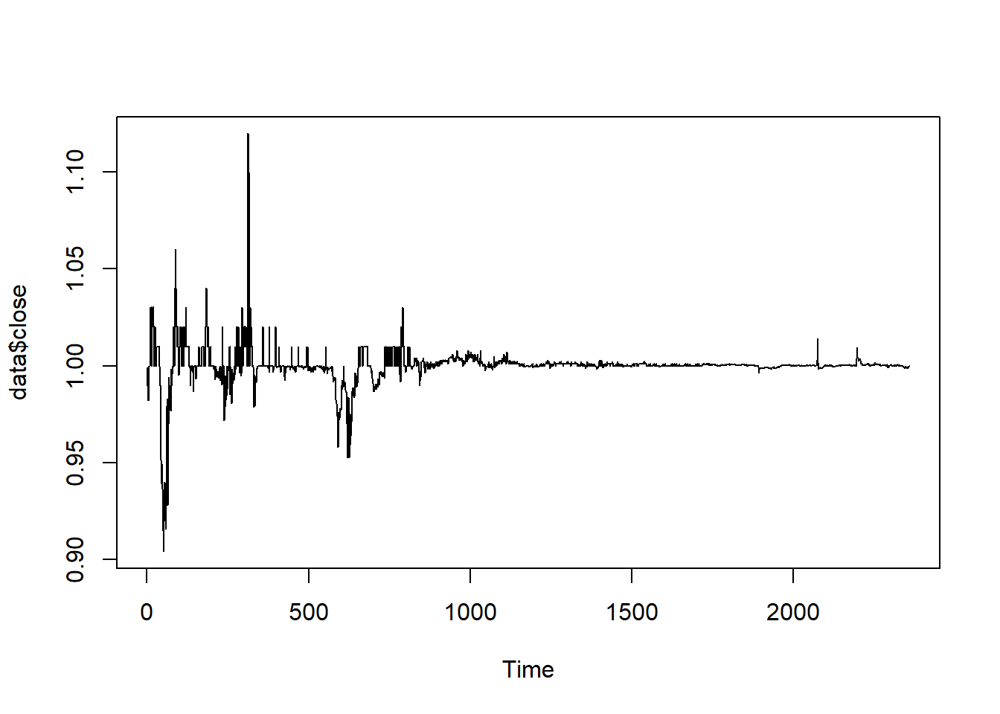
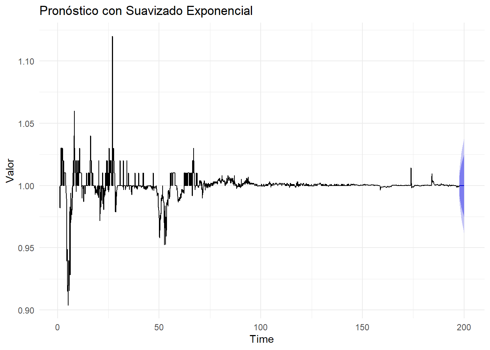
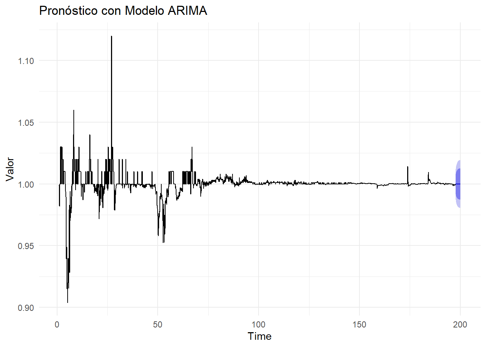
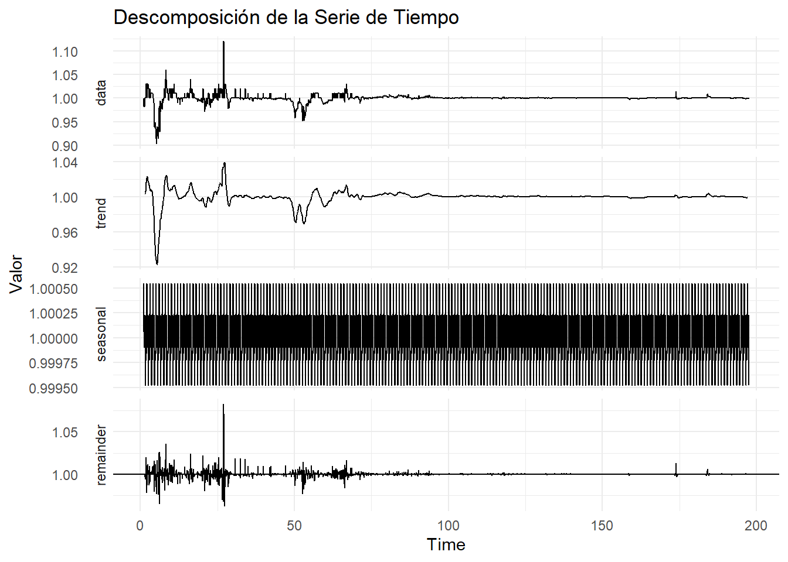

Capítulo 4 Procesamiento y visualización
El dataset seleccionado fue el de la stablecoin USDT (Tether) entre las diversas criptomonedas tiene una relevancia significativa en el análisis debido a su naturaleza como stablecoin. A diferencia de las criptomonedas más volátiles, USDT está diseñada para mantener un valor estable vinculado al dólar estadounidense. Esto permite que el análisis de serie de tiempo se enfoque en comportamientos menos volátiles y más predecibles en comparación con otras criptomonedas.
library(readr)
CRYPTO <- read_csv("C:/Users/LUISA MONTOYA/OneDrive - PUJ Cali/ARCHIVOS_LFMS/Escritorio/MAESTRIA-CIENCIA-DATOS/TERCER SEMESTRE/SERIES DE TIEMPO/MOD1-SERIES DE TIEMPO/MI-BOOK-CRYPTO/USDT.csv")## Rows: 2360 Columns: 6
## ── Column specification ────────────────────────────────────────────────────────
## Delimiter: ","
## chr (1): ticker
## dbl (4): open, high, low, close
## date (1): date
##
## ℹ Use `spec()` to retrieve the full column specification for this data.
## ℹ Specify the column types or set `show_col_types = FALSE` to quiet this message.## # A tibble: 6 × 6
## ticker date open high low close
## <chr> <date> <dbl> <dbl> <dbl> <dbl>
## 1 USDT 2023-08-15 0.999 0.999 0.998 0.999
## 2 USDT 2023-08-16 0.999 0.999 0.999 0.999
## 3 USDT 2023-08-17 0.999 1 0.998 0.999
## 4 USDT 2023-08-18 0.999 1.00 0.999 1.00
## 5 USDT 2023-08-19 0.999 1 0.999 1.00
## 6 USDT 2023-08-20 1.00 1 1.00 1.00## # A tibble: 6 × 6
## ticker date open high low close
## <chr> <date> <dbl> <dbl> <dbl> <dbl>
## 1 USDT 2017-03-05 0.9 0.999 0.9 0.999
## 2 USDT 2017-03-06 0.999 1 0.99 0.99
## 3 USDT 2017-03-07 0.99 0.99 0.981 0.982
## 4 USDT 2017-03-08 0.982 0.982 0.982 0.982
## 5 USDT 2017-03-09 0.982 0.982 0.982 0.982
## 6 USDT 2017-03-10 0.982 1 0.982 1# Cargar los datos (reemplaza "CRYPTO" con el nombre de tu conjunto de datos)
data <- CRYPTO
# Convertir la columna de fecha a tipo 'Date'
data$date <- as.Date(data$date)
# Crear una serie de tiempo
'ts_data <- ts(data$close, frequency = 365) # Frecuencia diaria'## [1] "ts_data <- ts(data$close, frequency = 365) # Frecuencia diaria"# Crear una serie de tiempo
ts_data <- ts(data$close, frequency = 12) # Frecuencia mensual
#Gráfico de datos en niveles
ts.plot(data$close)
# Suavizado exponencial
exp_smooth <- ets(ts_data)
# Pronóstico utilizando suavizado exponencial
forecast_exp <- forecast(exp_smooth, h = 30) # Pronóstico para 30 períodos
# Modelo ARIMA
arima_model <- auto.arima(ts_data)
# Pronóstico utilizando modelo ARIMA
forecast_arima <- forecast(arima_model, h = 30) # Pronóstico para 30 períodos
# Graficar los pronósticos
autoplot(forecast_exp) +
labs(title = "Pronóstico con Suavizado Exponencial",
y = "Valor") +
theme_minimal()
autoplot(forecast_arima) +
labs(title = "Pronóstico con Modelo ARIMA",
y = "Valor") +
theme_minimal()
# Realizar la descomposición
descomposicion <- decompose(ts_data, type = "multiplicative")
# Graficar los componentes de la descomposición
autoplot(descomposicion) +
labs(title = "Descomposición de la Serie de Tiempo",
y = "Valor") +
theme_minimal()
El análisis de los resultados del código se centra en el procesamiento y visualización de la serie de tiempo de la stablecoin USDT (Tether), utilizando técnicas de suavizado exponencial, modelos ARIMA y descomposición. A continuación, se detalla el análisis de los resultados obtenidos:
El análisis y las gráficas generadas en el código presentado se enfocan en la serie de tiempo de la stablecoin USDT (Tether) y su procesamiento utilizando suavizado exponencial, modelos ARIMA y descomposición. A continuación, se detalla el análisis de los resultados de las gráficas:
4.1 Pronóstico con Suavizado Exponencial:
En el primer gráfico, se muestra el pronóstico realizado utilizando el método de suavizado exponencial. Debido a la naturaleza estable de USDT, este enfoque es apropiado para capturar las tendencias subyacentes en los datos. Sin embargo, se emite una advertencia indicando que no se maneja una frecuencia mayor a 24, lo que implica que la estacionalidad se ignora en este pronóstico. A pesar de esto, el gráfico permite visualizar la tendencia general de los datos y cómo el suavizado exponencial busca ajustarse a ella.
4.2 Pronóstico con Modelo ARIMA:
El segundo gráfico muestra el pronóstico obtenido utilizando un modelo ARIMA. El modelo ARIMA es una técnica más avanzada que tiene en cuenta tanto la tendencia como la estacionalidad en los datos. Se utiliza el modelo auto.arima para encontrar automáticamente los parámetros adecuados para el modelo. El pronóstico resultante muestra cómo el modelo ARIMA intenta ajustarse a las fluctuaciones de la serie de tiempo, incluyendo patrones más complejos.
4.3 Descomposición de la Serie de Tiempo:
La descomposición de la serie de tiempo revela la contribución de la tendencia, estacionalidad y residuos a la variabilidad total. Aunque se presentó un error debido a la falta de suficientes períodos para una descomposición estacional efectiva, esta limitación se resolvió al aplicar enfoques alternativos como el suavizado exponencial y los modelos ARIMA.
En conclusión, el análisis realizado en este código ha permitido obtener una visión integral del comportamiento de USDT a lo largo del tiempo. La elección de técnicas como el suavizado exponencial y modelos ARIMA, adaptadas a la naturaleza estable de USDT, proporciona un análisis más completo. A pesar de los desafíos encontrados en la descomposición estacional, la aplicación de enfoques alternativos ha permitido aprovechar al máximo los datos disponibles y obtener información valiosa sobre el mercado de esta stablecoin.